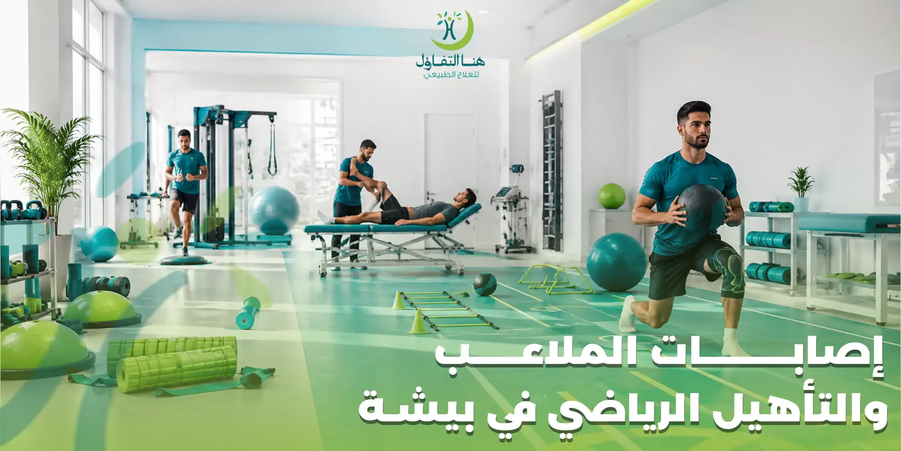

سواء كنت رياضيًا محترفًا، أو تمارس الرياضة بشكل منتظم، أو تعرضت لإصابة أثناء التمارين، فإن سرعة التشخيص والبدء في برنامج تأهيلي مناسب يعدان من أهم العوامل التي تساعد على العودة إلى النشاط بأمان. فالتوقف عن اللعب أو ممارسة التمارين لفترة طويلة دون علاج وتأهيل قد يؤدي إلى ضعف العضلات، وانخفاض اللياقة، وزيادة احتمالية تكرار الإصابة.
في مركز هنا التفاؤل للعلاج الطبيعي في بيشة نقدم برامج متخصصة في علاج إصابات الملاعب والتأهيل الرياضي، تعتمد على تقييم دقيق لنوع الإصابة، ووضع خطة علاجية تساعد على تخفيف الألم، واستعادة الحركة، وتقوية العضلات، والعودة التدريجية إلى النشاط الرياضي.
ما هي إصابات الملاعب؟
إصابات الملاعب هي الإصابات التي تحدث أثناء ممارسة الأنشطة الرياضية أو التمارين البدنية، وقد تصيب العضلات، أو الأربطة، أو الأوتار، أو المفاصل، أو العظام، وتختلف شدتها من إصابات بسيطة تحتاج إلى تأهيل قصير، إلى إصابات تتطلب برنامجًا علاجيًا وتأهيليًا لفترة أطول.
ويهدف العلاج الطبيعي إلى إعادة تأهيل المنطقة المصابة وتحسين كفاءتها الوظيفية، بما يساعد على تقليل خطر تكرار الإصابة مستقبلًا.
الحالات التي يشملها برنامج إصابات الملاعب
في مركز هنا التفاؤل نقدم برامج علاج وتأهيل للعديد من الإصابات الرياضية، منها:
ويتم تصميم برنامج خاص لكل إصابة وفقًا لدرجة الإصابة وأهداف المريض.
كيف يتم تقييم الإصابة؟
تبدأ رحلة العلاج في مركز هنا التفاؤل بتقييم شامل يساعد على تحديد طبيعة الإصابة ووضع الخطة العلاجية المناسبة.
ويتضمن التقييم:
- مراجعة التاريخ المرضي والإصابة.
- معرفة طريقة حدوث الإصابة.
- تقييم مدى الحركة.
- قياس قوة العضلات.
- تقييم التوازن والثبات.
- مراجعة الأشعة أو الرنين المغناطيسي عند توفرها.
- تحديد أهداف التأهيل والعودة للنشاط.
ومن خلال هذا التقييم يتم إعداد برنامج علاجي يناسب كل حالة بصورة فردية.
أهداف برنامج التأهيل الرياضي
لا يقتصر العلاج على تخفيف الألم فقط، بل يهدف إلى استعادة كفاءة الجسم والعودة إلى النشاط بصورة آمنة.
- • تقليل الألم والالتهاب.
- • تحسين حركة المفاصل.
- • تقوية العضلات.
- • تحسين المرونة.
- • استعادة التوازن.
- • تحسين الأداء الحركي.
- • تقليل احتمالية تكرار الإصابة.
- • المساعدة على العودة إلى الرياضة بصورة تدريجية وآمنة.
ماذا تشمل جلسات علاج إصابات الملاعب؟
يعتمد البرنامج على احتياجات كل مريض، وقد يشمل:
لماذا يعد التأهيل الرياضي مهمًا بعد الإصابة؟
قد يشعر بعض الرياضيين بتحسن الألم خلال فترة قصيرة، لكن اختفاء الألم لا يعني اكتمال التعافي. فالعودة المبكرة إلى النشاط قبل استعادة القوة والتوازن والحركة قد تزيد من احتمالية تكرار الإصابة.
لذلك يركز برنامج التأهيل الرياضي على إعادة إعداد الجسم تدريجيًا حتى يصبح قادرًا على تحمل متطلبات النشاط الرياضي، مع مراعاة طبيعة الرياضة التي يمارسها المريض ومستوى نشاطه.
علاج إصابات الركبة الرياضية في بيشة
تعد الركبة من أكثر المفاصل تعرضًا للإصابات أثناء ممارسة الرياضة، سواء نتيجة الحركات المفاجئة، أو القفز، أو تغيير الاتجاه بسرعة، أو الاحتكاك المباشر في الألعاب الجماعية. وقد تتراوح الإصابة بين شد بسيط في الأربطة أو العضلات إلى إصابات أكثر تعقيدًا مثل تمزق الأربطة أو الغضاريف.
في مركز هنا التفاؤل للعلاج الطبيعي في بيشة نقدم برامج متخصصة في علاج إصابات الركبة الرياضية، تبدأ بتقييم شامل للحالة ثم وضع خطة علاجية تساعد على استعادة الحركة، وتقوية العضلات المحيطة بالركبة، وتحسين الثبات، بما يساهم في العودة التدريجية إلى النشاط الرياضي.
ويشمل برنامج التأهيل:
- • تحسين مدى حركة الركبة.
- • تقوية العضلة الأمامية والخلفية للفخذ.
- • تحسين التوازن والثبات.
- • تدريب المريض على الحركة الصحيحة.
- • تقليل احتمالية تكرار الإصابة.
- • إعداد الرياضي للعودة إلى الملاعب بصورة آمنة.
علاج إصابات الكتف للرياضيين
يتعرض الكتف لضغط كبير في العديد من الرياضات مثل السباحة، وكرة اليد، وكرة الطائرة، ورفع الأثقال، مما يزيد من احتمالية الإصابة بالشد العضلي أو التهاب الأوتار أو إصابات المفصل.
ويهدف العلاج الطبيعي إلى تحسين حركة الكتف وتقوية العضلات المحيطة به، مع التركيز على استعادة الأداء الوظيفي بصورة تدريجية.
في مركز هنا التفاؤل يشمل برنامج علاج الكتف:
- • تقييم حركة مفصل الكتف.
- • تحسين المرونة.
- • تقوية عضلات الكفة المدورة.
- • تحسين استقرار المفصل.
- • تدريب الرياضي على الحركات الصحيحة.
- • إعداد المريض للعودة للنشاط الرياضي.
علاج التواء الكاحل في بيشة
يعد التواء الكاحل من أكثر إصابات الملاعب شيوعًا، وقد يعتقد البعض أنه يشفى بالراحة فقط، إلا أن كثيرًا من الحالات تحتاج إلى برنامج تأهيلي لاستعادة قوة الأربطة وتحسين التوازن ومنع تكرار الإصابة.
ويركز العلاج الطبيعي على:
- تقليل الألم والتورم.
- تحسين حركة مفصل الكاحل.
- تقوية العضلات المحيطة.
- تحسين التوازن.
- تدريب المريض على المشي والجري بصورة صحيحة.
- تقليل فرص حدوث التواء جديد.
كل ذلك يتم وفق خطة علاجية تناسب درجة الإصابة ومرحلة التعافي.
علاج تمزق العضلات
قد يحدث تمزق العضلات أثناء الجري، أو رفع الأوزان، أو ممارسة الرياضات المختلفة، وتختلف شدته من إصابة بسيطة إلى تمزق يحتاج إلى فترة تأهيل أطول.
ويهدف برنامج العلاج الطبيعي إلى:
- المساعدة على تخفيف الألم.
- تحسين مرونة العضلة.
- استعادة القوة العضلية.
- تحسين الأداء الحركي.
- تقليل احتمالية الإصابة مرة أخرى.
كما يتم توجيه المريض إلى الطريقة المناسبة للعودة إلى النشاط البدني بشكل تدريجي.
علاج التهاب الأوتار عند الرياضيين
يحدث التهاب الأوتار نتيجة الإجهاد المتكرر أو الاستخدام المفرط للمفصل، ويعد من الإصابات الشائعة لدى الرياضيين والأشخاص الذين يمارسون أنشطة تتطلب تكرار الحركة.
ويشمل برنامج العلاج:
- تقييم سبب الإصابة.
- تحسين مرونة الأوتار والعضلات.
- تقوية العضلات الداعمة.
- تصحيح نمط الحركة.
- تقديم برنامج تمارين منزلية.
- المتابعة المستمرة لتطور الحالة.
إعادة التأهيل بعد إصابات الأربطة
إصابات الأربطة، سواء تم علاجها تحفظيًا أو جراحيًا، تحتاج إلى برنامج تأهيلي متدرج يهدف إلى استعادة الثبات الطبيعي للمفصل.
ويعمل العلاج الطبيعي على:
- تحسين مدى الحركة.
- تقوية العضلات المحيطة.
- تحسين التوازن العصبي العضلي.
- تدريب المريض على الحركات الوظيفية.
- تقليل خطر تكرار الإصابة.
ويتم الانتقال بين مراحل البرنامج وفق تقييم أخصائي العلاج الطبيعي.
التأهيل بعد عملية الرباط الصليبي
تعتبر عملية الرباط الصليبي بداية رحلة التعافي وليست نهايتها، إذ يعتمد نجاح العودة إلى الرياضة بشكل كبير على جودة برنامج التأهيل.
في مركز هنا التفاؤل يتم إعداد برنامج متدرج يشمل:
- استعادة حركة الركبة.
- تقوية عضلات الفخذ.
- تحسين التوازن.
- تدريب المريض على المشي والجري.
- تمارين تغيير الاتجاه.
- تمارين القفز والهبوط.
- اختبارات تقييم الجاهزية قبل العودة للرياضة.
ويهدف البرنامج إلى مساعدة المريض على العودة للنشاط الرياضي بأمان، مع تقليل احتمالية التعرض لإصابة جديدة.
متى يمكن العودة إلى الرياضة بعد الإصابة؟
يختلف توقيت العودة إلى الرياضة من شخص لآخر، ولا يعتمد فقط على اختفاء الألم، بل على عدة عوامل مثل:
ولهذا لا يتم السماح بالعودة للنشاط الرياضي إلا بعد التأكد من جاهزية المريض وفق تقييم أخصائي العلاج الطبيعي والطبيب المعالج.
نصائح تساعد على الوقاية من إصابات الملاعب
الوقاية لا تقل أهمية عن العلاج، ويمكن تقليل احتمالية الإصابة من خلال:
لماذا تختار مركز هنا التفاؤل لعلاج إصابات الملاعب؟
يحرص مركز هنا التفاؤل للعلاج الطبيعي في بيشة على تقديم برامج علاجية وتأهيلية مصممة خصيصًا لكل مريض، مع الاهتمام بتحقيق أفضل نتائج ممكنة وفق الحالة الصحية ونوع الإصابة.
✓ تقييم دقيق للإصابة
قبل بدء العلاج لتحديد احتياجات كل مريض.
✓ برامج علاج فردية
مصممة لكل حالة بناءً على نوع الإصابة.
✓ أخصائيون مؤهلون
في العلاج الطبيعي والتأهيل الرياضي.
✓ أجهزة وتقنيات حديثة
لدعم عملية التأهيل وتحسين النتائج.
✓ متابعة مستمرة
لمراحل التعافي وتطوير الخطة.
✓ بيئة علاجية مجهزة
تركز على راحة المريض وسلامته.
الأسئلة الشائعة حول إصابات الملاعب والتأهيل الرياضي في بيشة
كم تستغرق مدة علاج إصابات الملاعب؟
تختلف المدة حسب نوع الإصابة وشدتها واستجابة المريض للعلاج، ويتم تحديد خطة العلاج بعد التقييم الأولي.
هل كل إصابات الملاعب تحتاج إلى علاج طبيعي؟
تستفيد كثير من الإصابات الرياضية من العلاج الطبيعي، سواء كان العلاج محافظًا أو بعد التدخل الجراحي، ويحدد الطبيب والأخصائي البرنامج المناسب لكل حالة.
هل يمكن العودة للرياضة بعد تمزق الأربطة؟
يمكن ذلك بعد استكمال برنامج التأهيل وتحقيق معايير القوة والثبات والحركة التي يحددها أخصائي العلاج الطبيعي.
هل يساعد العلاج الطبيعي في تقليل احتمالية تكرار الإصابة؟
يساعد برنامج التأهيل الذي يركز على القوة والتوازن والحركة الوظيفية في تقليل خطر تكرار الإصابة، مع الالتزام بالتعليمات والتمارين الموصى بها.
هل يمكن علاج إصابات الملاعب بدون جراحة؟
تعتمد الحاجة إلى الجراحة على نوع الإصابة وشدتها. كثير من الإصابات الرياضية يمكن علاجها بنجاح من خلال برنامج علاج طبيعي وتأهيلي مناسب دون الحاجة إلى تدخل جراحي.
احجز موعدك في مركز هنا التفاؤل للعلاج الطبيعي ببيشة
إذا كنت تبحث عن علاج إصابات الملاعب في بيشة أو تحتاج إلى التأهيل الرياضي بعد إصابة أو عملية جراحية، فإن مركز هنا التفاؤل للعلاج الطبيعي يقدم برامج متخصصة تعتمد على التقييم الدقيق والخطط العلاجية الفردية لمساعدتك على استعادة الحركة والعودة إلى نشاطك اليومي أو الرياضي بأفضل صورة ممكنة.